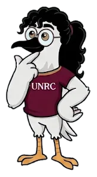
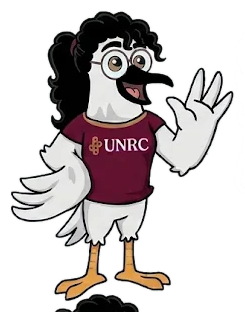

Conoce el proyecto detrás de Oasis Psique: su propósito, su meta, su historia y las personas que lo hacen posible.
El propósito que guía a Oasis Psique: por qué existe este ecosistema y a quién sirve.

La meta a futuro del proyecto: hacia dónde crece la comunidad de Psicología a Distancia.
Cómo nació Oasis Psique y los momentos que lo han formado.

Las personas que hacen posible el proyecto: docentes y colaboradores.
← Volver